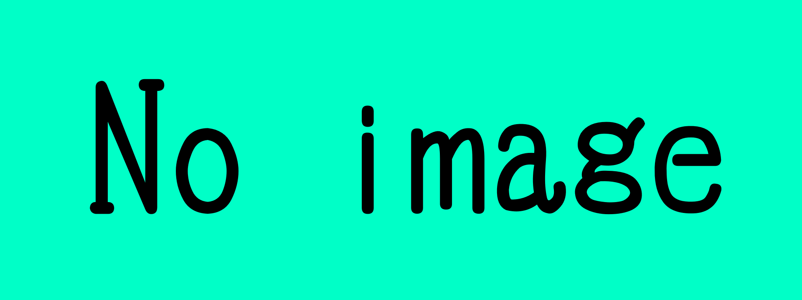

Nuxt.jsでWebサイトを作ってみる

「Vue.jsでWebサイトを作るのは楽しい．でも，構成やルーティングが増えてくると面倒になるなあ」そう感じたことはありませんか？(・_・;)
そんなときに頼れるのが，Vueベースのフレームワーク「Nuxt.js」です．Nuxtを使えば，プロジェクト構成，ルーティング，自動ビルドなどが一括で扱えるため，開発の効率が格段にアップします．
Nuxt.jsとは？
Nuxt.jsは，Vue.jsをベースにしたアプリケーションフレームワークです．以下のような特徴があります：
- ページベースのルーティング（ファイルを置くだけ）
- サーバーサイドレンダリング（SSR）や静的サイト生成（SSG）の両対応
- ホットリロード可能な開発サーバー
- 豊富な公式／非公式モジュール
SSRとは何か？
SSR（サーバーサイドレンダリング）とは，ユーザーのリクエストに応じて，サーバー側でHTMLを生成して返す仕組みです．検索エンジン対策（SEO）や初期表示の高速化が期待できます．
ただし，サーバー処理が必須となるため，静的なホスティング環境では扱いが難しいです．
今回は静的サイト構成（SSG）
本記事では，SSG（Static Site Generation）方式を採用します．これは事前にHTMLを生成し，静的にホスティングできるため，高速・安価・シンプルという利点があります．
開発環境を整える
Node.js（v18以上）をインストールした上で，以下を実行します：
npx nuxi init my-nuxt-appディレクトリが作成され，初期設定が自動生成されます．次に依存をインストールします：
cd my-nuxt-app
npm install開発サーバーの起動：
npm run devhttp://localhost:3000 にアクセスすると初期画面が確認できます．
プロジェクト構成
my-nuxt-app/
├── app.vue
├── nuxt.config.ts
├── pages/
│ └── index.vue
├── components/
└── public/
- app.vue：共通レイアウト
- pages/：ルーティングと対応する各ページ
- components/：再利用可能なUI部品
- nuxt.config.ts：グローバル設定
app.vueとNuxtPage
<template>
<NuxtPage />
</template>
全ページの表示を統括する重要なポイントです．共通ナビゲーションなどをここで記述可能です．
ページの追加
pages/about.vueを作成するだけで自動的に/aboutページが生成されます．
<template>
<div>
<h3>このサイトについて</h3>
<p>これはNuxtで作成したWebサイトです．</p>
</div>
</template>
コンポーネントの活用
<template>
<Header />
<main>
<NuxtPage />
</main>
</template>
<script setup>
import Header from '~/components/Header.vue'
</script>
静的ビルドと公開
以下のコマンドで静的HTMLを生成します：
npm run build
npm run generate.output/public/配下に出力され，それをVercelやNetlifyへアップすればOKです．
GitHub Pages へのデプロイ
Nuxt.jsで生成した静的サイトを，無料で公開できるサービスのひとつが GitHub Pages です．ここでは，NuxtプロジェクトをGitHubにアップロードし，静的ファイルをPagesにホスティングする手順を紹介します．
1. GitHub リポジトリの作成
まず，GitHub上で新しいリポジトリを作成します．リポジトリ名は任意ですが，ユーザー名.github.io とすると，ルートドメインで公開されます．
2. プロジェクトを初期化し，リポジトリにプッシュ
git init
git remote add origin https://github.com/ユーザー名/リポジトリ名.git
git add .
git commit -m \"初回コミット\"
git push -u origin main3. 静的サイトを生成
npm run generate
これで .output/public ディレクトリに静的ファイルが生成されます．
4. GitHub Pages 用ブランチに配置
GitHub Pages は通常 gh-pages ブランチや docs フォルダを使って公開されます．以下の手順で gh-pages ブランチに静的ファイルをアップします．
git checkout --orphan gh-pages
git reset --hard
cp -r .output/public/* ./
git add .
git commit -m \"deploy\"
git push origin gh-pages --force
もしくは，gh-pages パッケージを使って以下のように自動化もできます：
npm install --save-dev gh-pages
npx gh-pages -d .output/public5. GitHub上でPagesを有効化
GitHubのリポジトリ設定画面にある「Pages」セクションで，ブランチとして gh-pages を選び，ルートを指定して保存すれば，数十秒後にサイトが公開されます．
公開URLは通常 https://ユーザー名.github.io/リポジトリ名/ の形式になります．
補足：Base URL の設定
サブディレクトリ（例：ユーザー名.github.io/nuxt-site/）でホスティングする場合は，Nuxtの設定でベースURLを指定する必要があります：
// nuxt.config.ts
export default defineNuxtConfig({
app: {
baseURL: '/リポジトリ名/'
}
})この設定を忘れると，CSSやルーティングが正しく動作しなくなるため注意が必要です．(；・∀・)
おわりに
Nuxt.jsを活用すれば，Vueの柔軟性を保ちながら効率よく静的サイトを構築できます．初めての方にもおすすめの構成です．(｀・ω・´)
※この記事の内容は，2025年7月時点の情報に基づいています． 本コンテンツの作成時間（HTML/CSS/JavaScriptの設計・実装を含む）：約6時間